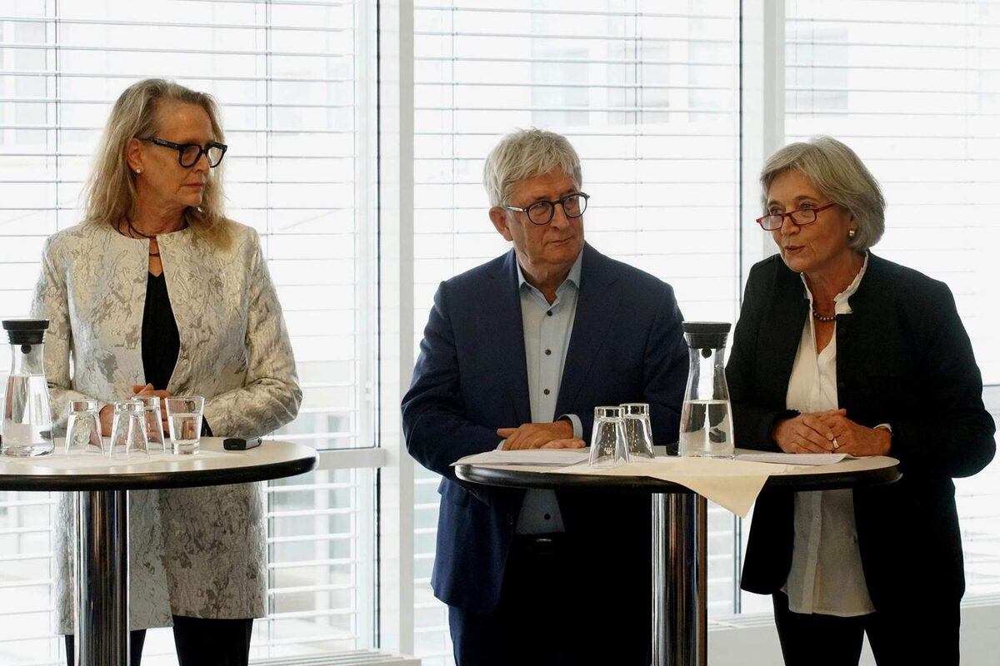
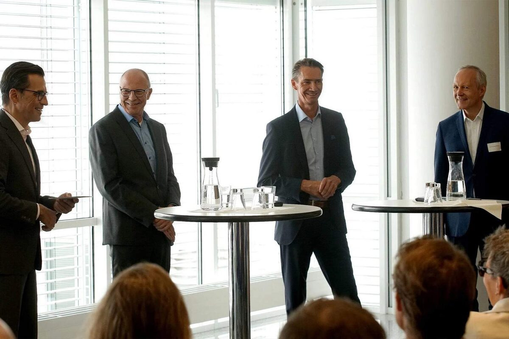
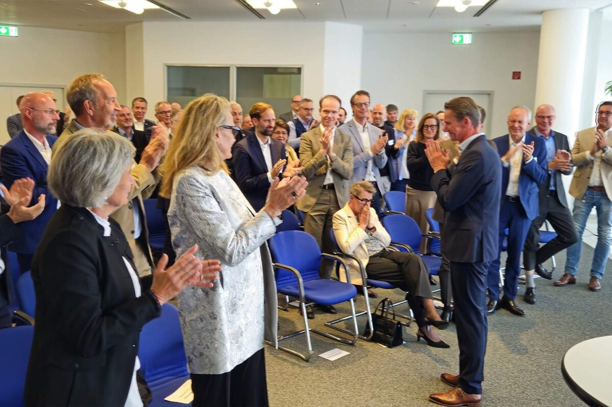
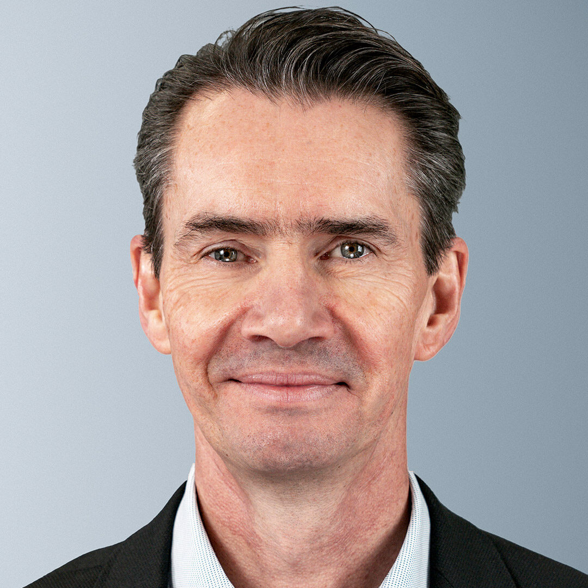

From his first day at work to today Brasseler bids farewell to Klaus Rübesamen as he retires after more than 44 years
Published on 16 December 2025
Lemgo, 16 December, 2025
After more than four decades with the company, Klaus Rübesamen, Managing Director of Gebr. KG for many years, went into retirement and was bid farewell at a send-off ceremony. The event at the company headquarters in Lemgo, which was attended by numerous external and internal guests, offered a look back on a long professional career and many years of cooperation.
From trainee to managing director
Klaus Rübesamen joined Brasseler in 1981 as a trainee business management assistant. With commitment, openness, and a keen interest in international sales, he progressed through various positions until he succeeded Siegfried Haverkamp as a member of the management board in 2005. In their speeches, the corporate partners Kirsten and Anke Niehus and advisory board chairman Wilhelm Bollmann emphasized how much his work was characterized by reliability, consistency, and a strong sense of responsibility.
Recognition from the shareholder family and advisory board
Wilhelm Bollmann recalled that the then head of human resources, Gustav Nolte, had already noted during the job interview in 1981: “Mr. Rübesamen fully meets the requirements and is well suited for this position.” This assessment, Bollmann joked, was confirmed over and over again throughout the decades. With his openness, language skills, and sensitivity to cultural differences, Rübesamen built up a great deal of trust among customers and partners in Germany and abroad. On behalf of the shareholder family and the advisory board, Wilhelm Bollmann expressed his sincere thanks to Klaus Rübesamen for his many years of contribution to the company’s success and his consistently reliable cooperation.
Kirsten Niehus praised the continuity of his career as an example of the development opportunities offered by the Brasseler family business. She emphasized that this long time of working together not only stands for personal stability, but also for the values of a family business.
Anke Niehus added that his attitude is also reflected in his passion for sports. Perseverance, fairness and discipline are qualities that have accompanied and shaped him both in his sporting activities and in his professional life and that have always been evident in his collaboration with others.

Shareholders Anke (left) and Kirsten Niehus, as well as Advisory Board Chairman Wilhelm Bollmann
Exchange as a common thread, even at the farewell ceremony
Following the speeches, Stephan Köhler, Head of Management, moderated two rounds of talks in which Klaus Rübesamen and some of the people he worked with over the years talked about changes in dentistry and in the working world over the last 40 years. The audience learned many interesting details that highlighted the changes within the dental industry and in everyday professional life.

Discussion panel on dentistry – Stephan Köhler (CEO), Michael Küllmer (head of innovation management), Klaus Rübesamen, PD Dr. M. Oliver Ahlers

A farewell with a personal touch
At the end of the event, Klaus Rübesamen himself addressed the guests. In his speech, he looked back on 44 years together and spoke openly about the moment of farewell. His words were very well received and many in the audience were visibly moved. The official farewell ceremony ended with prolonged applause and a standing ovation.
In the afternoon, Klaus Rübesamen invited the entire Brasseler workforce to an after-work party in the courtyard of the factory premises and took the opportunity to say goodbye to many of his colleagues in person.
Continuity in management
Klaus Rübesamen’s responsibilities have been redistributed within Brasseler’s existing management team. Stephan Köhler, who has been in charge of the dental business since 2024, is taking over the Komet Jewellery division. Quality management and Regulatory Affairs will fall under Alexander Bartel’s management responsibilities in the future.

3 questions for Klaus Rübesamen
Looking back on 44 years of professional life, what would you say were the biggest changes during that time?
The biggest change was the digitalization of communication and working methods. From telex to fax to collaborative platforms that enable digital work, accessing shared data, and communicating from anywhere in the world.
The founding of the EU was also a real milestone. Free movement of goods, travel without borders, a single currency, to name but a few advantages. This has benefited companies and Europeans alike and will hopefully continue to do so for a long time to come.
Of course, there are also negative developments, such as the ever-increasing bureaucracy, documentation requirements with no discernible added value, and increasingly complex regulations for the approval of medical devices, as many markets have their own requirements.
You have spent your entire working life with one company. What has motivated you to stay all these years?
Whenever I was ready to take the next step on the career ladder, there was the prospect of further development within the company. Even though external offers were often more lucrative from a financial point of view, the soft factors at Brasseler were more important to me. I enjoyed my work, the respectful way we interact with each other and, of course, the success Brasseler has had over the last four decades. Never leave a winning team!
What are your plans for your retirement?
First of all, my family. I am very much looking forward to spending more time with my wife and our grandchildren. I am also looking forward to my work on the advisory board of TBV Lemgo Lippe. And who knows, there might be one or two more advisory board mandates to follow.
Thank you very much, Klaus Rübesamen, and all the best for this new chapter in your life!

Press Contact
Melanie Köhler
Corporate communication
Phone +49 (0) 160 3447748
presse@brasseler.de